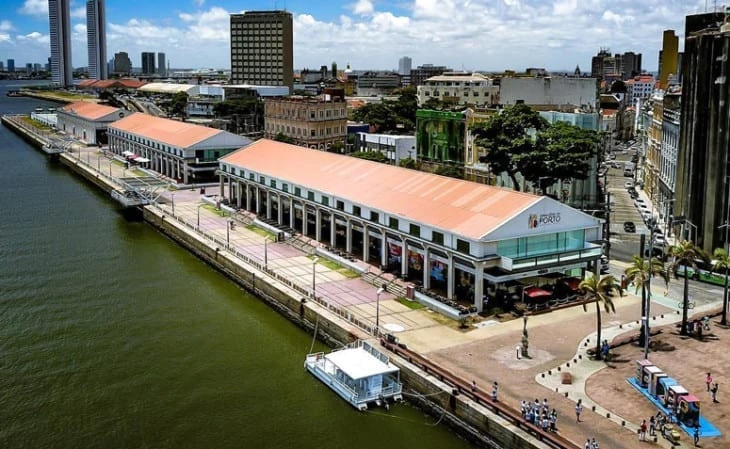
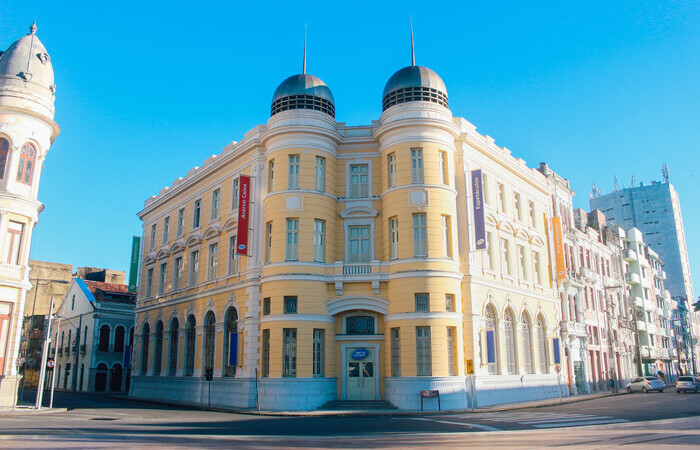

Recife Antigo
1. Parque das Esculturas Francisco Brennand

Parque das Esculturas, uma instalação a céu aberto sobre o molhe do porto, composta por 90 obras do artista plástico Francisco Brennand, inaugurada em comemoração aos 500 anos do Descobrimento do Brasil. Dentre as esculturas, o destaque vai para a imponente Coluna de Cristal, que não passa despercebida com seus 32 metros de altura.
- Endereço: arrecifes do porto.
- Valor de entrada: a entrada no parque é gratuita, mas você paga R$ 5 se optar por fazer a travessia.
- Horário de funcionamento: o parque funciona 24 horas por dia, mas a travessia a partir do Marco Zero acontece diariamente, das 7h às 17h.
2. Armazéns do Porto
O Armazéns do Porto é o lugar ideal para aquela pausa para o almoço ou apenas para tomar um cafezinho ou uma cerveja para espantar o calor. O espaço fica bem ao lado do letreiro de Recife, na Praça do Marco Zero, e oferece uma variedade de bares, restaurantes, cafés e sorveterias. O mais legal de tudo é a vista privilegiada que se tem para o porto e para as esculturas de Brennand.
- Endereço: Av. Alfredo Lisboa.
- Horário de funcionamento: de segunda a quarta, das 10h às 22h; quinta, das 10h à 0h; sexta e sábado, das 10h às 3h; domingo, das 10h às 22h.
3. Caixa Cultural
De frente para o Marco Zero está a Caixa Cultural, em um charmoso edifício de 1912 que funcionou como sede da Bolsa de Valores de Pernambuco até 2006. O espaço multicultural traz exposições, apresentações de teatro, música, dança e diversas outras atividades. Você pode conferir a programação no site ou entrar para conhecer as belas instalações e ser surpreendido.
- Endereço: Av. Alfredo Lisboa, 505.
- Valor de entrada: gratuito.
- Horário de funcionamento: de terça a sábado, das 10h às 20h; domingo, das 10h às 17h.
FONTE: viajali